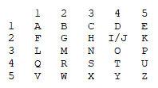

Kapitel 39: Tag 36 des Sommertrips (Montag)
Die Reste des Frühstücks verkrusteten bereits auf den weißen
Keramiktellern, als Dr. Klug mit der Kante ihres Kugelschreibers gegen
ein leeres Glas tippte. Das Geräusch schnitt schrill durch das
morgendliche Gemurmel der Zehntklässler.
„Ruhe im Saal, bitte“, rief sie, und ihre Stimme nahm sofort diesen
unerbittlichen, analytischen Tonfall an, den alle aus dem Unterricht
kannten. „Wir müssen den heutigen Vormittag effizient strukturieren. Die
Wahrscheinlichkeit, dass wir unser Tagespensum bei dieser Lautstärke
rechtzeitig absolvieren, nähert sich rapide der Null. Nach dem Frühstück
folgt bekanntlich die intellektuelle Pflichtkomponente. Als nächste
Variable in unserem Referats-Gleichungssystem steht heute ein
historisches Thema auf dem Plan.“ Sie blickte über den Rand ihrer Brille
hinweg in die Runde.
„Justus, die Bühne gehört dir. Bitte tritt
vor und präsentiere uns deine Ausarbeitung. Und denkt alle daran:
Aufmerksamkeit ist eine Konstante, die ich von jedem Einzelnen erwarte.“
Justus sprang voller Tatendrang von seinem Stuhl in der ersten Reihe
auf. Mit einem selbstgefälligen Grinsen im Gesicht klopfte er seine
ordentlich beschriebenen Karteikarten stolz auf der Tischkante glatt. Er
ging mit erhobenem Haupt und schnellen, wichtigtuerischen Schritten nach
vorne, warf der Klasse einen triumphierenden Blick zu und suchte sofort
den Blickkontakt zu Dr. Klug.
„Ich berichte heute über Verrat, Geheimdienste und Geheimcodes in der
Antike“, begann Justus begeistert. Er stand da vorne, als hätte er den
Begriff „Musterknabe“ höchstpersönlich erfunden – den Rücken
kerzengerade, die Haare akkurat gescheitelt und die Karteikarten so
penibel sortiert, dass selbst das Bundesamt für Verfassungsschutz
neidisch geworden wäre.
Einen kurzen Moment blieb es absolut still. Die Klasse brauchte Zeit, um
die epische Dreistigkeit dieser Themenwahl zu verdauen. Dann zündete die
Lunte. Ein erstes, unterdrücktes Prusten entwich Leo auf der linken
Seite. Innerhalb von Sekunden mutierte das Geräusch zu einer
hochansteckenden Epidemie. Ein kollektives, schadenfrohes Brüllen brach
los. Jemand hustete so demonstrativ das Wort „Zwillingsbruder!“ in den
Raum, dass Kollege Mauer am Ende des Tisches fast von seinem Sitzkissen
rutschte.
Jeder in diesem Raum besaß schließlich ein funktionierendes Gedächtnis.
Justus sprach hier nicht über Geschichte, er las aus seiner eigenen
Biografie vor! Wenn im letzten Halbjahr auch nur ein einziger
Spickzettel falsch gefaltet, eine E-Zigarette auf dem Klo schief
gemustert oder eine Hausaufgabe im Halbdunkel kopiert worden war, hatte
Justus’ interner Spionage-Radar schon angeschlagen. Sein persönlicher
GPS-Tracker war fest auf das Lehrerzimmer programmiert. Dass
ausgerechnet er über Verrat referierte, war so, als würde der Weiße Hai
einen Vortrag über die Freuden des Veganismus halten.
Am Rand des Tisches lieferte sich Mauer gerade einen heroischen Kampf
gegen die Biologie.
Seine Lippen waren so fest aufeinandergepresst, dass sie aussahen wie
ein dünner, weißer Kreidestrich. Seine Augen waren zu Schlitzen verengt,
seine Schultern vibrierten im Takt des kollektiven Lachens und sein Kopf
lief dunkelrot an. In ihm schrie alles nach einem zynischen Zwischenruf,
der Justus’ Karriere als Klassen-Spion augenblicklich beendet hätte.
Doch sein neues Empathieempfinden hielt ihn in letzter Sekunde an
der kurzen Leine. Mit der Willenskraft eines shaolinschen Mönchs
schluckte er das Lachen hinunter, stieß ein mühsames Räuspern aus und
warf der Klasse einen strengen Blick zu. Er versuchte den moralischen
Fels in der Brandung zu spielen, glich aber eher einem Dampfkochtopf
kurz vor der Explosion.
Justus wartete stoisch, bis das Gelächter zu einem leisen, frustrierten
Tuscheln abgeflaut war. Er schaute niemanden direkt an. Dann legte er
wieder los. Seine Stimme triefte vor pädagogischer Überlegenheit.
„Um den Verrat in der griechischen Antike zu verstehen“, dozierte Justus
und blätterte die erste Karteikarte hörbar um, „muss man begreifen, dass
es damals kein einheitliches Griechenland gab. Was wir heute als
Griechenland kennen, war ein riesiges Geflecht aus Hunderten von
konkurrierenden Stadtstaaten, den sogenannten Poleis. Jede Polis hatte
eigene Gesetze, eigene Armeen und vor allem eine eigene Hausordnung.
Weil diese Städte ständig miteinander zofften, war die politische
Loyalität extrem wandelbar. Man hielt sich einfach an keine Absprachen.
Man war nicht primär ‚Grieche‘, man dachte nur an den eigenen Vorteil.
Quasi wie bei uns in der Klasse, wenn es darum geht, wer den Tafeldienst
schwänzt. Wenn sich die Großwetterlage änderte, änderte sich eben auch
die Treue der Mächtigen. Heute bester Kumpel, morgen petzt man – äh,
sorry, meldet man den Spickzettel beim Lehrkörper.“
„Gab es da nicht diesen einen heftig hässlichen Typen bei den 300
Spartanern?“, unterbrach Jonas von der Seite. Er lümmelte sich so tief
auf seinem Stuhl, dass sein Steißbein fast den Boden berührte, und
grinste provokant. „Der im Film aussieht wie ein Ork und alle für ein
bisschen Taschengeld an die Perser verkauft?“
Justus atmete tief durch die Nase ein. Ein leichtes, mitleidiges Lächeln
umspielte seine Lippen. Er ließ sich doch von einem permanent
Versetzungsgefährdeten nicht aus dem Konzept bringen.
„Dein popkulturelles Halbwissen verblüfft mich immer wieder, Jonas. Aber
ja. Das war Ephialtes von Trachis. Im Jahr 480 vor Christus, während der
Schlacht bei den Thermopylen, verriet er den spartanischen König
Leonidas an die Perser. Die Griechen hielten den Engpass eigentlich
perfekt. Aber Ephialtes rannte sofort zum persischen König Xerxes, um
eine hohe Belohnung einzukassieren. Er zeigte den Truppen einen geheimen
Bergpfad. Die Perser konnten die Griechen dadurch umzingeln und
vernichten. Ephialtes’ Name wurde danach so tief verabscheut, dass das
Wort Ephialtes im modernen Griechisch bis heute das Wort für ‚Albtraum‘
ist. Ein absolut vorbildlicher Akt der transparenten
Informationsweitergabe.“
„Alter, heftig“, murmelte Ben in der letzten Reihe. „Der Ur-Verräter.
Der Typ hat das Petzen quasi erfunden.“
„Er war nur der Amateur-Pionier“, korrigierte Justus und sah kurz
triumphierend zu Ben nach hinten. „Es gab damals sogar einen eigenen
Fachbegriff für das kollektive Verpfeifen: den Medismus. Die Griechen
bezeichneten die Perser oft als Meder. Wer mit dem persischen Feind
kollaborierte und brav die Wahrheit sagte, betrieb Medismus. Ganze
Städte liefen aus Angst vor einer Strafarbeit oder aus purer Berechnung
zu den Persern über, als Xerxes mit seiner riesigen Armee anmarschierte.
Die haben einfach begriffen, auf welcher Seite die Macht sitzt. Und dann
gab es noch Figuren wie Alkibiades.“
„Der war doch ein absoluter Player, oder?“, warf die Lehrerin Dr. Klug
ein. Sie versuchte die historische Tiefe zu prüfen, wirkte dabei aber
eher wie eine stolze Mutter.
„Absolut“, antwortete Justus. „Alkibiades war der unangefochtene
Endgegner der Loyalität – ein genialer, aber völlig skrupelloser
athenischer Feldherr. Als er in Athen wegen eines Skandals angeklagt
werden sollte – und ich meine völlig zurecht, denn Regeln sind
schließlich Regeln –, flüchtete er und verriet seine Heimatstadt prompt
an den Erzfeind Sparta. Er gab den Spartanern quasi die perfekten
Insider-Tipps, wo Athen die Spickzettel versteckt hatte. Später
verkrachte er sich auch mit den Spartanern, weil er eine Affäre mit der
Frau des spartanischen Königs hatte, und floh zu den Persern. Am Ende
kroch er verrückterweise wieder nach Athen zurück und ließ sich
kurzzeitig als Held feiern, bevor er endgültig ins Exil musste. Der Typ
hat dreimal die Seiten gewechselt. Ein echter Trendsetter in Sachen
strategischer Berichterstattung.“
„Und wie haben die Griechen solche Leute bestraft?“, fragte Zoe und
kaute nervös auf ihrem Textmarker. „Gab es da ein Knast-System oder
mussten die einfach zwei Wochen das Lehrerzimmer wischen?“
„Oh nein, die antike Justiz war wesentlich effizienter und kannte kein
Pardon für Regelbrecher“, erklärte Justus, wobei seine Augen
verräterisch aufleuchteten. „In den meisten Städten galt Hochverrat,
also das mutwillige Sabotieren der kollektiven Ordnung, als das
schlimmste Verbrechen überhaupt. Die logische Konsequenz war fast immer
die Todesspanne – die Todesstrafe. Wenn der Übeltäter rechtzeitig
stiften ging, wurde er verbannt, sein gesamtes Vermögen beschlagnahmt
und sein Haus dem Erdboden gleichgemacht. In Athen gibt es zudem den
Ostrakismus, das Scherbengericht, mit dem man potenzielle Verräter oder
Bürger, die zu mächtig wurden, vorsorglich für zehn Jahre aus der Stadt
warf. Aber das war nur die rechtliche Seite.“
Justus machte eine dramatische Pause, strich eine Karteikarte glatt und
blickte ernst in die Runde.
„Schlimmer als das Gesetz war die göttliche Hausordnung. Die Griechen
glaubten an Heilige Verträge. Wer Verbündete verriet oder die
Gastfreundschaft, die sogenannte Xenia, missachtete, beging kein rein
politisches Delikt. Es war ein direkter Frevel gegen Zeus und die
Götter. Ein Verräter zog den ultimativen Zorn der Götter auf sich und
seine gesamte Familie. Man glaubte, dass dieser kosmische Tadel über
Generationen weitervererbt wurde.“
Justus wollte die
Karteikarten ordentlich ablegen, aber seine Finger verloren plötzlich
die Kraft, sodass die präzise geordneten Zettel kraftlos auf den
Küchentisch flatterten. Er atmete tief ein, und jeder im Raum konnte
sehen, wie heftig sich sein Brustkorb hob und senkte. Die
selbstgefällige Souveränität des vermeintlichen Musterknaben fiel in
einem einzigen Augenblick von ihm ab wie eine billige Imitation. Übrig
blieb ein blasser, sichtlich zittriger sechzehnjähriger Junge, dem die
Tränen in den Augen standen. Er schluckte so schwer, dass es in der
plötzlichen Stille des Raumes fast zu hören war.
„Im
Grunde“, begann Justus, und seine Stimme zitterte jetzt so heftig, dass
er kurz absetzen musste, „bin ich genau das, worüber ich hier vorne
referiere. Ich bin ein Verräter. Und nach den Maßstäben der Menschen,
über die ich gerade gesprochen habe… hätte ich jedes Recht auf eure
Gemeinschaft verwirkt.“
Niemand lachte mehr. Das hämische Grinsen erstarb augenblicklich auf
allen Gesichtern. Kevin, der gerade noch einen zerstörerischen Spruch
auf den Lippen hatte, klappte verdutzt den Mund wieder zu.
„Ihr alle wisst es, es ist kein Geheimnis. Ich habe euch jahrelang
keinen Grund gegeben, es zu vergessen“, fuhr Justus fort. Er zwang sich
mühsam, den Blick vom sicheren Küchenboden zu lösen, und schaute seinen
Mitschülern zum ersten Mal direkt, ungeschützt in die Augen. „Ich bin
die Petze der Klasse. Ich habe mir verdammt noch mal etwas darauf
eingebildet, den Lehrern jeden kleinsten Fehler von euch brühwarm zu
servieren. Ich habe mich hinter Paragraphen und der Schulordnung
versteckt, weil ich dachte, das macht mich besser als euch. Ich dachte
wirklich, ich wäre im Recht.“ Seine Stimme überschlug sich kurz vor
Scham. „Aber ich war einfach nur ein feiger Spion. Und ich habe erst
hier auf dieser Klassenfahrt begriffen, wie tief der Graben ist, den ich
zwischen uns geschaufelt habe.“
Sein Blick wanderte langsam an den Rand des Tisches zu Fiete. Justus
fixierte die Schramme an Fietes Schläfe, und das nackte Entsetzen
spiegelte sich in seinem Gesicht wider.
„In den Katakomben hier auf Aegina…“, Justus’ Stimme brach komplett. Ein
unterdrücktes Schluchzen entfuhr ihm, bevor er sich mit schierer
Willenskraft wieder fing. „Da hat meine widerliche Sucht, den Aufpasser
zu spielen, zu einem handgreiflichen Streit geführt. Ein Streit, der
dich, Fiete, fast die Gesundheit oder… oder noch viel mehr gekostet
hätte. Weil die Situation da unten wegen mir völlig eskaliert ist. Ich
war so blind. Es tut mir leid. Es tut mir unendlich leid, Fiete. Bei dir
und bei jedem Einzelnen von euch, denen ich das Leben hier schwer
gemacht habe.“
Er hob die rechte Hand. Seine Finger zitterten so stark, dass er sie
kaum gestreckt halten konnte, doch er hielt sie hoch wie ein Angeklagter
vor dem Jüngsten Gericht.
„Ich habe erst jetzt, in dieser Dunkelheit da unten, erkannt, wie giftig
und zerstörerisch mein Verhalten war. Ich habe eure Gemeinschaft
systematisch kaputtgemacht. Ich schwöre euch heute, vor der gesamten
Klasse und vor den Lehrern: Ich werde nie wieder ein Wort über das, was
unter uns passiert, nach oben tragen. Nie wieder. Und wenn ich diesen
Schwur breche… wenn ich auch nur einmal wieder der Versuchung nachgebe,
den Finger zu heben… dann habt ihr jedes Recht, mir diese Hand
abzuschlagen.“
Im Raum herrschte eine lähmende, bleierne Stille. Die Schüler starrten
Justus an, als hätten sie einen Geist gesehen. Auf den Gesichtern
mischte sich fassungsloser Unglaube mit einem tiefen, schmerzhaften
Misstrauen. Konnte man ihm glauben? War das nur eine meisterhafte Show,
um die Wogen nach dem Albtraum in den Katakomben zu glätten, oder
blutete er da vorne gerade seelisch aus?
Plötzlich hielt es Mauer nicht mehr auf seinem Stuhl. Er sprang auf, die
Stuhlbeine kreischten gellend auf dem Boden. Seine mühsam aufgebaute
Empathie schehn im Angesicht dieser drastischen Worte wie weggewischt –
oder vielleicht war er von Justus’ nackter Verzweiflung auch einfach
zutiefst erschrocken. „Jetzt reicht es aber!“, schimpfte er los, sein
Gesicht glühte dunkelrot, und seine Stimme zitterte vor echter Erregung.
„Was sind denn das für archaische Drohungen und Gewaltphantasien in
einem schulischen Kontext? Justus, hör auf damit! Wir sind hier nicht im
antiken Sparta, Herrschaftszeiten! Eine solche Sprache werde ich nicht
tolerieren, und diese ganze Angelegenheit mit den Katakomben… wir hätten
da unten fast jemanden verloren! Das muss disziplinarisch…“
„Kai, warte bitte. Setz dich.“
Dr. Klug legte ihre Hand auf seinen Unterarm. Mit einem unnachgiebigen
Griff zog sie ihn zurück auf seinen Stuhl. Ihr Blick war scharf wie ein
Skalpell, richtete sich aber nicht gegen Mauer, sondern ruhte schützend
auf der Klasse, die geschockt den Atem anhielt.
„Wir müssen hier mathematisch präzise trennen“, sagte Dr. Klug. Ihre
Stimme war leise, aber sie besaß eine unerschütterliche Ruhe. „Justus’
Wortwahl bezüglich der Schwurhand ist metaphorisch und historisch
inspiriert, das spüren wir alle hier im Raum. Er sucht nach Worten für
eine Schuld, die ihn erdrückt. Aber der Kern seiner Aussage betrifft das
soziale Gefüge dieser Klasse. Und diese Dynamik ist eine Variable, die
ihr, die Schüler, ab heute unter euch ausmachen müsst. Das geht uns als
Lehrkräfte im Grunde nichts an, solange es absolut gewaltfrei bleibt.
Wir können euch Respekt beibringen, aber Vertrauen müsst ihr euch selbst
schenken.“
Dann wandte sie sich direkt an Justus. Ihr Blick verlor seine Härte,
wurde streng, aber von einer tiefen, fast mütterlichen Gerechtigkeit
getragen.
„Was mich jedoch betrifft, Justus, ist mein eigener Unterricht. Und mein
Vertrauen in dich. Ich werde deine Aussage jetzt als verbindliche
Prämisse nehmen. Solltest du mir in Zukunft jemals wieder etwas
verpetzen, das deine Mitschüler betrifft und dich persönlich überhaupt
nichts angeht … dann werde ich das als bewusste, bösartige Störung
unseres Vertrauensverhältnisses werten. Ich werde dir dafür, ohne mit
der Wimper zu zucken, augenblicklich eine Ungenügend, eine Sechs, als
mündliche Unterrichtsnote eintragen. Das ist der Preis für deine
Glaubwürdigkeit. Verstanden?“
Justus schluckte schwer. Eine Träne stahl sich über seine Wange, während
er eifrig nickte. „Ja, Frau Dr. Klug. Absolut verstanden. Danke.“
Mauer blickte von Dr. Klug zu Justus. Man konnte förmlich sehen, wie es
hinter seiner Stirn arbeitete, wie die harte Schale seiner Prinzipien
aufbrach. Seine Schultern entspannten sich langsam. Die Wut wich einer
tiefen Erkenntnis. Er erinnerte sich an seinen großen Vorsatz – an den
Lehrer, der er sein wollte. Ein guter Pädagoge brauchte keine
drakonischen Strafen und kein Brüllen, wenn die menschliche Struktur
bereits stand. Er atmete tief aus und nickte Justus langsam zu.
„Gut“, sagte Mauer, und seine Stimme klang überraschend sanft, völlig
frei von seiner sonstigen, schützenden Arroganz. „Ich schließe mich der
Kollegin Dr. Klug an, Justus. Ich werde mich zukünftig exakt genauso
verhalten. Wenn du zu mir kommst, um jemanden anzuschwärzen, schicke ich
dich weg. Und es wird schmerzhafte Konsequenzen für deine Note haben.
Ich werde nicht mehr dein Fluchtweg sein. Wir klären das ab jetzt auf
Augenhöhe.“
Ein raunendes, fast ehrfürchtiges Tuscheln ging um den Küchentisch.
Unsichere Blicke wurden ausgetauschen. Das erste Mal seit Jahren
schauten die Schüler Justus nicht mit purem Hass, sondern mit echtem
Staunen an. Fiete saß einen langen Moment völlig unbeweglich da, die
Hand noch immer flach auf dem Tisch. Dann hob er langsam den Kopf. Sein
Blick traf Justus, wanderte zu der zitternden Schwurhand und blieb dort
hängen. Schließlich nickte Fiete ihm einmal kurz und kaum merklich zu.
Es war kein völliges, bedingungsloses Verzeihen – dafür saßen der
Schmerz und die Angst aus den Katakomben zu tief –, aber es war ein
Anfang. Ein erster, ehrlicher Waffenstillstand. Ein stilles Versprechen,
dass die Jagd auf Justus ab heute vorbei war.
Dr. Klug klatschte einmal kurz in die Hände, und das Geräusch durchbrach
die Ernsthaftigkeit des Moments. „Gut“, sagte sie, und obwohl sie
lächelte, schimmerte eine leichte Rührung in ihren Augen. „Die
Störvariablen sind eliminiert, das System ist wieder im Gleichgewicht.
Der Vortrag wird nun fortgesetzt. Justus, bitte fahre mit dem nächsten
Gliederungspunkt fort.“
Justus atmete so tief und hörbar aus, dass es wie ein erleichtertes
Seufzen klang. Es wirkte, als sei eine tonnenschwere Last aus Schuld und
Einsamkeit von seinen Schultern gefallen. Er hob seine Karteikarten
wieder auf, und obwohl seine Hände immer noch leicht bebten, flog kein
Zettel mehr davon. Er ordnete sie kurz, strich sie ein letztes Mal glatt
und blickte wieder in die Runde. Er fuhr fort, und seine Stimme gewann
mit jeder Sekunde, die verstrich, an Sicherheit zurück. Doch es war eine
andere Art der Sicherheit. Eine, die nicht mehr aus Paragraphen kam,
sondern aus dem Wissen, dass er gerade eine zweite Chance bekommen
hatte.
„Nachdem wir über Verrat gesprochen haben, kommen wir nun zu denjenigen,
die im Schatten agierten, um ihn zu verhindern oder aufzudecken: den
Geheimdiensten“, leitete Justus über. Seine Stimme hatte den zittrigen
Ton verloren, war aber frei von der alten Überheblichkeit. Sie klang
jetzt packend, fast wie die eines Crime-Podcasters. „Vergesst Hollywood.
In der Antike gab es keine klimatisierten Hauptquartiere, keine CIA,
keinen MI6 und keinen BND. Keine Bürokratie. Spionage in den
Stadtstaaten war eine dreckige, hocheffiziente Mischung aus
spezialisierten Eliteeinheiten, getarnten Boten und einem Netz aus
unsichtbaren Augen und Ohren.“
„Aber Sparta hatte doch diese mega krasse Truppe, oder?“, warf Ben ein.
Er saß längst aufrecht, die Ellenbogen auf dem Tisch. „Ick habe da mal
so ein Deep-Dive-Video auf YouTube gesehen. Die haben im Dunkeln
operiert, oder?“
„Exakt. Die Krypteia“, bestätigte Justus, und seine Augen blitzten auf.
Er brauchte die Karteikarten kaum noch. „Das war das extremste System
der Antike – die erste echte Geheimpolizei der Geschichte. Gleichzeitig
war es die Eliteausbildung für die brutalsten jungen Spartaner. Ihre
Zielscheibe waren die Heloten. Das war die versklavte Urbevölkerung, die
den Spartanern zahlenmäßig zehn zu eins überlegen war. Sparta lebte in
permanenter Paranoia vor einem Aufstand von innen.“
„Und wie sind die vorgegangen?“, wollte Luna wissen. Sie hatte
aufgehört, auf ihrem Block herumzukritzeln.
„Ziemlich brutal“, erklärte Justus. „Die jungen Spartaner wurden nackt
oder nur mit dem Nötigsten in die Wildnis geschickt. Bewaffnet mit
absolut nichts außer einem einzigen Dolch. Tagsüber lauerten sie
bewegungslos im Dickicht der Berge, spionierten Dörfer aus und
erstellten Todeslisten. Sobald die Nacht hereinbrach, schwärmten sie
aus. Sie überfielen die Heloten-Dörfer und töteten gezielt diejenigen,
die zu stark, zu intelligent oder wie geborene Anführer wirkten. Es war
ein eiskaltes System des staatlich organisierten Terrors. Selektion
durch Schattenmord.“
„Klingt eher nach einer Mördertruppe als nach Agenten“, murmelte Tarik
und schauderte leicht.
„Es war psychologische Kriegsführung gegen das eigene Volk“, nickte
Justus. „Aber es ging auch subtiler. Ein ganz anderes System gab es in
den griechischen Kolonien auf Sizilien, besonders in Syrakus unter dem
Tyrannen Hieron dem Ersten. Er setzte nicht auf Messer, sondern auf
Paranoia. Er erfand die Otakoustai. Übersetzt heißt das: die
Ohrenbläser.“
„Ohrenbläser? Wie geil ist das denn?“, kicherte Chantal aus der ersten
Reihe. „Was haben die gemacht? Dir ins Ohr gepustet, bis du singst?“
„Besser“, erwiderte Justus, und ein echtes, ehrliches Lächeln stahl sich
auf sein Gesicht.
„Das war die absolute Meisterklasse der Infiltration. Hieron schleuste
Spione inkognito unters Volk. Das waren extrem oft Frauen, die
sogenannten Potagogides. Sie saßen neben dir auf dem Marktplatz, tranken
mit dir in der Taverne, feierten auf deinen privaten Familienfesten. Sie
lachten über deine Witze, hörten aber nur auf eines: die Kritik am
Herrscher. Wer in Syrakus am Stammtisch den falschen Spruch brachte, sah
den nächsten Sonnenaufgang meistens schon aus dem Kerker. Niemand wusste
mehr, ob der eigene Bruder nicht vielleicht ein Ohrenbläser war.“
„Gibt es heute auch noch im Internet. TikTok-Kommentare, safe“, stellte
Leo trocken fest.
„Absolut, die Mechanismen ändern sich nie“, stimmte Justus zu, sichtlich
begeistert von der Resonanz. „Aber die Spionage funktionierte auch über
Tausende Kilometer hinweg im Krieg. Das Militär schickte die Katalopes
und Proskopoi vor. Das waren berittene Kundschafter. Sie ritten
meilenweit vor den Armeen, verkleidet als Bauern oder Händler, mitten
durch feindliches Gebiet.
Ihre Aufgabe bestand darin, Hinterhalte
ausfindig zu machen, Truppen zu zählen und Pfade zu finden. Und Athen?
Athen kontrollierte das Meer. Sie bauten die Paralos und die Salaminia –
das waren ultraschnelle Staatsgaleeren. Offiziell hieß es, das seien
harmlose Diplomaten- und Kultschiffe. In Wahrheit waren es schwimmende
Spionage-Zentralen.
Während die Gesandten im Hafen lächelnd Geschenke austauschten,
kartografierte die Besatzung im Geheimen jede feindliche Werft, zählte
die Kriegsschiffe und checkte die Verteidigungsanlagen aus. Athen wusste
oft schon vor dem Gegner, wie viele Schiffe dieser überhaupt in den
Krieg schicken konnte.“
Dr. Klug nickte anerkennend. „Eine geschickte Ausnutzung logistischer
Ressourcen. Effizienz par excellence.“
„Und wem das noch nicht subtil genug war, für den gab es die Proxenie“,
fuhr Justus fort.
Seine Stimme besaß jetzt das Tempo eines Agenten-Thrillers. „Das war das
eleganteste Spionagenetzwerk der alten Welt. Ein Proxenos war quasi ein
Honorarkonsul – ein Athener, der offiziell verkündete: ‚Hey, ich mag
Sparta, ich helfe spartanischen Gästen bei uns in Athen.‘ Ein
offizieller, hoch angesehener Freund.
Und genau da lag die Falle.
Dieses grenzenlose Vertrauensverhältnis war die perfekte Tarnung. Diese
Männer saßen an den Hebeln der Macht. Sie hörten Staatsgeheimnisse beim
Abendessen, lasen vertrauliche Berichte und leiteten diese brisanten
Insider-Infos diskret, am Zoll vorbei, an die feindliche Partnerstadt
weiter. Die perfekten Maulwürfe im feinen Zwirn.“
„Und was war mit den Persern?“, fragte Fiete plötzlich aus dem
Hintergrund. Seine Stimme war ruhig, das lähmende Misstrauen schien sich
endgültig in echte Neugier verwandelt zu haben. „Die hatten doch ein
riesiges Imperium. Die hatten doch bestimmt auch was am Start.“
Justus blickte Fiete direkt an. Ein echtes, erleichtertes Leuchten trat
in seine Augen, dankbar für diese Brücke. „Die Perser waren die
absoluten Control-Freaks, Fiete. Für die Griechen war deren System ein
totaler Schock. Während die Griechen improvisierten, betrieben die
Perser Spionage als straff durchorganisierte Weltbehörde. Der Großkönig
hatte Kontrolleure, die man im ganzen Reich ehrfürchtig und voller Angst
die ‚Augen und Ohren des Königs‘ nannte. Das waren schwer bewaffnete
königliche Inspektoren. Sie tauchten unangemeldet mit eigenen
Elite-Truppen in den Provinzen auf, filzten die Statthalter, scannten
die Steuerbücher und schickten Express-Berichte über ein gigantisches
Stafetten-Postsystem direkt in den Palast. Wer da betrog oder
rebellierte, war tot, noch bevor er das Wort ‚Verschwörung‘ fertig
aussprechen konnte. Das war totale, lückenlose Überwachung im
XXL-Format.“
Justus trat einen Schritt näher an den großen Küchentisch heran; die
Klasse beugte sich unwillkürlich vor.
„Das bringt uns zum großen Finale: den Geheimcodes. Wenn die Spione
versagten, mussten die Chiffren den Kopf hinhalten. Die Griechen
entwickelten Methoden, die so genial waren, dass sie die Grundlagen der
modernen Kryptografie legten.“
Er drehte eine Karteikarte um, auf der eine detaillierte Skizze
gezeichnet war. „Das älteste bekannte Verschlüsselungswerkzeug der
Menschheit ist die Skytale von Sparta – ein rein mechanisches Werkzeug
aus dem Peloponnesischen Krieg. Das Prinzip ist so simpel wie genial.
Der Absender nahm einen Holzstab mit einem ganz exakten, geheimen
Durchmesser. Um diesen Stab wickelte er spiralförmig einen langen,
schmalen Streifen aus Pergament oder Leder.“
„Und dann? Wie lief das mit dem Schreiben?“, fragte Mia, die gebannt auf
die Skizze starrte.
„Dann schrieb man die Nachricht längs auf den aufgewickelten Stab“,
erklärte Justus mit großen Gesten. „Buchstabe für Buchstabe. Wenn man
den Lederstreifen danach wieder abrollte … Magie. Die Buchstaben
rutschten auseinander. Aus einem Angriffsbefehl wurde eine völlig
sinnlose, chaotische Buchstabensuppe. Der Bote wickelte sich diesen
Streifen einfach als normalen Gürtel um den Bauch und spazierte durch
die feindlichen Linien. Wenn die Wachen ihn filzten, sahen sie nur ein
Stück Leder. Erst der Empfänger in Sparta, der einen exakt gleich dicken
Holzstab besaß, wickelte den Gürtel wieder auf – und die Buchstaben
rutschten wie von Zauberhand wieder zu Wörtern zusammen. Heute nennt man
das eine Transpositionschiffre. Ein Code, der nicht die Buchstaben
verändert, sondern das Universum, in dem sie stehen.“
„Verdammt schlau“, raunte Leo. „Ein analoges Passwort. Und was hatten
die noch auf Lager?“
„Die Tachygraphie, eine frühe Form der Kurzschrift“, fuhr Justus fort,
und sein Tempo zog noch einmal an, als würde er einen Countdown
herunterzählen. „Um geheime Ratsprotokolle im Bruchteil einer Sekunde
aufzuzeichnen oder hochbrisante Staatsgeheimnisse so zu notieren, dass
Außenstehende nur Bahnhof verstanden, erfanden die Griechen ein eigenes,
abstrakte Zeichensystem. Ganze Sätze wurden in kryptische Symbole und
verkürzte Ligaturen gepresst.
Eine der ältesten bekannten Formen dieser antiken Hacker-Schrift ist bis
heute auf einer Marmorplatte direkt auf der Akropolis in Athen
eingemeißelt.“
Justus machte eine dramatische Pause, senkte die Stimme und blickte
verschwörerisch in die Runde. „Und dann gab es noch das eigentliche
Prunkstück der Spionage: die Steganographie. Das bedeutet: Du
verschlüsselst nicht den Text, du versteckst die Existenz der Nachricht
komplett vor der Außenwelt. Der Historiker Herodot berichtet von zwei
völlig verrückten Beispielen. Das erste ist die Geschichte vom lebenden
USB-Stick.“
Die Klasse hielt den Atem an.
„Der Herrscher Histiaios musste eine Geheimbotschaft durch feindliches
Gebiet an einen Verbündeten schmuggeln. Er nahm einen treuen Sklaven,
rasierte ihm den Kopf kahl und tätowierte die Nachricht direkt auf die
nackte Kopfhaut. Dann sperrte er ihn weg und wartete wochenlang, bis die
Haare des Sklaven komplett nachgewachsen waren. Der Mann passierte alle
feindlichen Grenzkontrollen als stinknormaler Reisender. Niemand
schöpfte Verdacht. Beim Empfänger angekommen, hieß es wieder: Haare ab!
Die Botschaft wurde gelesen – die Mission war erfüllt.“
Die Klasse prustete los. „Stell dir vor, du musst zwei Monate warten,
bis deine Haare wachsen, nur um eine WhatsApp zu senden!“, lachte Ben
tränenüberströmt und hielt sich den Bauch.
„Und wehe, der Typ kriegt unterwegs Haarausfall, dann fliegt die ganze
Operation auf!“, johlte Kevin von hinten.
„Das zweite Beispiel rettete den Griechen den Hintern“, erzählte Justus
weiter, während sich das Kichern langsam legte. „Ein Exil-Grieche namens
Demaratos wollte seine Heimat vor dem bevorstehenden, vernichtenden
Überraschungsangriff der persischen Flotte warnen. Er nahm eine hölzerne
Schreibtafel. Aber anstatt das Wachs zu beschreiben, kratzte er die
Warnung direkt in das rohe Holz darunter. Danach goss er frisches,
unbeschriebenes Wachs über die Rillen. Für die Grenzwachen sah die Tafel
völlig unbenutzt und wertlos aus. Sie winkten den Boten durch. Erst die
Frau des spartanischen Königs Leonidas, die legendäre Gorgo, roch den
Braten. Sie schabte das Wachs ab und brachte die Botschaft ans Licht,
die den Lauf der Geschichte veränderte.“
„Und jetzt“, sagte Justus, und ein breites, fast schon diebisches
Grinsen breitete sich auf seinem Gesicht aus, während er ein großes,
weißes Plakatpapier unter dem Tisch hervorzauberte, „holen wir die
Antike genau hierher. Wir machen eine praktische Gruppenübung. Wir
knacken das Polybios-Chiffre.“
Mit einem lauten Rascheln breitete er das Plakat mitten auf dem
Küchentisch aus. Darauf war mit dickem, schwarzem Filzstift ein
riesiges, bedrohlich wirkendes Quadrat aufgemalt.
„Der griechische Historiker Polybios erfand im zweiten Jahrhundert vor
Christus ein System, das Buchstaben in nackte Zahlenwerte übersetzte“,
erklärte Justus, während die Schüler aufsprangen und sich wie Ermittler
über den Tisch beugten. „Da das moderne deutsche Alphabet
sechsundzwanzig Buchstaben hat, nutzen wir ein Fünf-mal-Fünf-Raster. Die
Buchstaben I und J teilen sich einfach ein Feld, weil sie sich im
Kontext leicht erraten lassen.“
Die Schüler starrten auf das Raster, als wäre es der Code für einen
Safe:

„Die Regel ist ganz einfach“, sagte Justus. „Man nennt immer erst die
Zeile, dann die Spalte. Genau wie beim Spiel ‚Schiffe versenken‘. Wenn
ich zum Beispiel das Wort SPION verschlüsseln will, geht das so: Das S
ist Zeile 4, Spalte 3. Also 43. Das P ist Zeile 3, Spalte 5, also 35.
Das I ist 24, das N ist 33 und das O ist 34. Zusammen ergibt das Wort
SPION den Code: 43 35 24 34 33. Habt ihr das Prinzip verstanden?“
„Ja, Mann, das ist ja voll logisch“, sagte Sarah, deren Ehrgeiz
sichtlich geweckt war.
„Perfekt“, sagte Justus. „Denn Polybios schlug vor, dieses System im
Krieg per visuellem Signal zu betreiben. Mit brennenden Fackeln von
Festungsmauer zu Festungsmauer.“
Mit einem dramatischen Klicken zog er zwei kleine, taktische
Taschenlampen aus seiner Tasche und stellte sie auf den Tisch.
„Und genau das machen wir jetzt. Ich werde den Raum abdunkeln und damit
die Gefechtsbereitschaft herstellen. Wir spielen genau sechzehn Runden,
damit jeder von euch einmal die Chance hat, ein Wort in die Finsternis
zu leuchten. Wer das gesuchte Wort als Erster korrekt dechiffriert,
bekommt den Punkt. Wer wird der Meisterspion? Runde eins beginnt …
jetzt!“
Justus stürmte zum Fenster und zog die schweren Holzläden zu, bis die
Küche in die düstere Atmosphäre einer spartanischen Operationszentrale
getaucht war. Nur ein paar verzweifelte Sonnenstrahlen schmuggelten sich
durch die Ritzen und warfen dünne Lichtstreifen auf den Boden.
„Runde eins!“, verkündete Justus und drückte Leo beide Taschenlampen in
die Hände. „Du bist das wandelnde Signalfeuer. Die linke Hand blinkt die
Zeile, die rechte die Spalte. Und wehe, du machst dazwischen keine
Pause, dann dechiffrieren wir hier morgen noch. Wenn das Wort im Kasten
ist, brüllst du ‚Stop‘. Und … Action!“
Leo bezog Stellung am Kopfende des Tisches wie ein General vor der
Schlachtkarte. Er kniff die Augen zusammen, fixierte das Plakat, das im
Halbdunkel lauerte, und hob die linke Hand: blink, blink. Kurz darauf
die rechte Hand: blink, blink, blink, blink.
„Zwei, vier … das ist ein I!“, feuerte Ben sofort aus der Hüfte.
Leo blieb im Rhythmus. Linke Hand: viermaliges Gewitter. Rechte Hand:
dreimaliges Aufblitzen.
„Vier, drei … das S!“, kreischte Emma, als ginge es um die Million bei
Günther Jauch.
Leo feuerte den dritten Buchstaben ab. Links: einmal. Rechts: fünfmal.
„Eins, fünf … ein E!“, kombinierte Justus lautstark im Hintergrund.
Leo feuerte das furiose Finale. Links: dreimal. Rechts: einmal. „Stop!“,
brüllte er, als müsste er eine Granate ankündigen.
„Drei, eins … ein L!“, johlte Ben über den Tisch, dass die Kaffeetassen
klirrten. „INSEL! Das Wort heißt INSEL! Schreibt mir den Punkt auf!“
„Richtig! Erster Abschuss für Ben!“, rief Justus in die Finsternis,
während die Klasse in johlendes Gelächter ausbrach.
Das Spiel mutierte innerhalb von Minuten zu einer hochenergetischen
Nerd-Olympiade. In der dritten Runde übernahm Amelie das Kommando an den
Lampen. Sie versuchte das Wort BOOT zu blinken. Ihre Umsetzung war
jedoch ein mittelschweres Koordinationsdebakel: Beim zweiten Buchstaben
verhedderte sie sich so spektakulär, dass sie mit der linken und rechten
Hand gleichzeitig ein wildes Stroboskopgewitter in den Raum schickte.
„Hä? Was ist das denn für ein Hieroglyphen-Quatsch?“, feixte Leo aus der
Ecke. „Amelie, das war ein Gruß an den Sonnengott, aber ganz sicher kein
Polybios-Code!“
„Ich bin im Kabelbaum verrutscht, noch mal!“, schrie Amelie vor Lachen.
Sie atmete tief durch, sortierte ihre Extremitäten, blinkte den Code
diesmal sauber ins Ziel, und Ben staubte eiskalt den nächsten Punkt ab.
In Runde sieben eskalierte die mathematische Paranoia endgültig. Ein
unheimlich langes Wort stand auf dem Programm, doch beim dritten
Buchstaben verlor die Klasse komplett den Faden.
„Moment mal, war das jetzt Zeile drei oder war das die vierte?“, fragte
Zoe völlig orientierungslos.
„Ich habe überhaupt nichts mehr verstanden, das sah aus wie ein defektes
Blinklicht am Porsche“, gab selbst Dr. Klug lachend zu. Die strenge
Mathematikerin war längst vom unbarmherzigen Spieltrieb infiziert und
fuchtelte begeistert mit ihrem Kugelschreiber in der Luft herum.
„Der Sender wiederholt den dritten Buchstaben für die geistig
Abwesenden, bitte!“, kommandierte Justus grinsend. Der Schüler an den
Lampen gab noch einmal alles: linker Arm hoch, rechter Arm hoch, klare
Kante.
„Ah, jetzt ja! Das ist ein F!“, brüllte Fiete.
„Dann ist es SCHIFF!“, preschte Leo dazwischen.
„Falsch! Weit vorbei!“, rief der Sender mit dem Stolz eines
Festungskommandanten.
„STRAND!“, warf Mia im exakt selben Bruchteil einer Sekunde ein.
„Treffer, versenkt! Punkt für Mia!“, bestätigte Justus.
Die Klasse
johlte, klatschte und feierte Mia, als hätte sie gerade den Code des
Bundesnachrichtendienstes geknackt.
Es ging Schlag auf Schlag. Runde um Runde wanderten die Taschenlampen
weiter, und mit jedem energetischen Blinken verrauchte die lähmende
Anspannung des Tages. Es wurde gekichert, Takte mitgeklopft,
Zahlenkolonnen quer über den Tisch gebrüllt und herzhaft geschimpft,
wenn sich jemand verzählte. Sogar Mauer saß mit einem breiten, ehrlichen
Gesichtskotelett-Grinsen am Tisch. Er hämmerte so verbissen mit dem
Bleistift auf seinem Notizblock herum, um die Zahlen zu dechiffrieren,
dass die Mine abbrach. In diesem orchestralen Chaos aus gemeinsamem
Lachen war die düstere Katastrophe aus den Katakomben nicht nur weit weg
– sie schien schlichtweg in einer anderen Galaxis stattzufinden. Justus
stand wie ein Dirigent mittendrin, steuerte das Spektakel souverän und
war in diesem Moment keine Zielscheibe mehr. Er war einfach einer von
ihnen.
Als die sechzehnte Runde Geschichte war und Justus die schweren
Fensterläden wieder aufstieß, explodierte das grelle griechische
Mittagslicht im Raum. Alle blinzelten wie Maulwürfe beim Schichtwechsel,
rieben sich lachend die Augen und hielten sich scherzhaft die Hände vors
Gesicht. Der Vortrag war offiziell vorbei; die Stimmung in der Küche
hatte sich grundlegend gedreht. Niemand verschwendete in dieser Sekunde
auch nur einen einzigen Gedanken daran, dass Justus vor einer Stunde
noch die meistgehasste Petze der gesamten Schullaufbahn gewesen war. Die
pure, alberne Begeisterung über das Spiel hatte das Eis vorerst
gebrochen.
Mit lautem Geplauder und bester Laune räumten die Schüler die Utensilien
beiseite, um den großen Holztisch für das anstehende Mittagessen zu
decken. Gemeinsam schnippelten sie frische Auberginen, brieten das
Hackfleisch an und schichteten die Zutaten gut gelaunt in die
Auflaufformen, um das traditionelle griechische Moussaka für den Ofen
vorzubereiten.
Nachdem das üppige Mittagessen erfolgreich verdaut worden war, hieß es
wieder: rauf auf die Drahtesel. Der Weg führte die Schüler und Lehrer
hin zur Bucht von Agia Marina. Das Meer lag da wie ein riesiger,
funkelnder Türkis, fast unnatürlich ruhig, eingerahmt von hellen
Sandstränden und steilen Felswänden im Hintergrund.
„Endlich!“, brüllte Ben, warf sein Fahrrad direkt in den weichen Sand
und riss sich noch im vollen Sprint das T-Shirt über den Kopf.
„Warte mal, du Sturzkopf!“, rief Dr. Klug hinterher. Sie rollte deutlich
langsamer auf ihrem nostalgischen Damenrad heran, wobei sie ihren
riesigen, eleganten Strohhut trug. „Die kinetische Energie eurer
ungestümen Bewegung muss jetzt erst einmal kontrolliert abgebremst
werden. Wir haben hier schließlich ein logistisches Strand-Protokoll
einzuhalten, junger Mann!“
Am Strand wartete bereits eine Phalanx von großen, breiten
Allround-SUP-Boards, die im Sand aufgereiht lagen. Daneben stapelte sich
ein Haufen leuchtend oranger Schwimmwesten.
Mauer baute sich demonstrativ vor den Boards auf. Er trug seine
verspiegelte Sonnenbrille, in der sich das Meer brach, ein so eng
anliegendes UV-Shirt, dass man jede Rippe einzeln zählen konnte, und
verströmte sofort wieder diese unerschütterliche Aura absoluter,
militärischer Autorität. Seine kurze Phase der sanften, pädagogischen
Zurückhaltung vom Vormittag war mit dem ersten Sandkorn zwischen seinen
Zehen komplett verdampft. Er klatschte zweimal so laut in die Hände,
sodass ein paar Möwen erschrocken das Weite suchten.
„Zuhören, Truppe!“, dröhnte seine Stimme mühelos über das sanfte
Plätschern der Wellen hinweg. „Bevor hier auch nur ein einziger
ungewaschener Fuß das kühle Nass berührt, erwarte ich eure ungeteilte
Aufmerksamkeit. Wir machen heute Stand Up Paddling. Das ist kein
Freifahrtschein für unkontrolliertes, anarchisches Chaos, sondern eine
Sportart, die eiserne Disziplin erfordert. Wer meint, hier den Seeräuber
spielen zu müssen, verbringt den Nachmittag beim Muschelsortieren!“
Ein ohrenbetäubender Jubel brach unter den Schülern aus. Mauers
Drohungen wurden mittlerweile einfach als sportliche Hintergrundmusik
verbucht. Leo feuerte Ben mit einem klatschenden High-Five an, und
selbst Justus, der immer noch mit einem dezenten Sicherheitsabstand im
Trockenen stand, lächelte erleichtert. Die Jagdsaison auf die Petze war
offiziell abgeblasen, und das Abenteuer auf dem Wasser konnte beginnen.
„Ruhe!“, unterbrach Mauer das Gejodel. „Ich diktiere jetzt die
Sicherheits- und Verhaltensregeln, und ich werde keine Abweichungen
tolerieren! Regel Nummer eins: Jeder von euch zieht ausnahmslos eine
dieser Rettungswesten an. Wer meint, das sei uncool, bleibt am Strand
und schreibt ein fünfseitiges Protokoll. Regel Nummer zwei: Die maximale
Uferdistanz beträgt exakt fünfhundert Meter. Wer die virtuelle
Grenzlinie überschreitet, wird von mir persönlich zurückgepfiffen und
verliert sein Board. Ist das angekommen?“
„Ja, Herr Mauer“, murmelte die Klasse im synchronisierten
Dauerschleifen-Chor.
„Gut. Nun zur Physik der Fortbewegung“, fuhr Mauer fort, riss ein Paddel
an sich und sprang mit der grazilen Dynamik eines Actionhelden im
Trockendock auf eines der Boards im Sand.
„Ihr beginnt im
Knien, exakt über dem Tragegriff in der Mitte der Konstruktion. Wenn ihr
stabile Fahrt aufnehmt und eure Knie das Überleben signalisieren, stellt
ihr die Füße hüftbreit auf, tackert den Blick fest an den Horizont und
steht zügig auf. Das Paddel wird weit vorne eingetaucht, der Knick des
Blattes zeigt nach vorne. Die Kraft kommt gefälligst aus dem Rumpf,
nicht aus euren schlaffen, verkümmerten Oberarmen! Nun zu dem, was ihr
tunlichst unterlasst: Keine riskanten Wendemanöver in der Nähe von
Felsen und absolut kein Blödsinn! Haben wir uns unmissverständlich
verstanden?“
Er feuerte einen Blick in die Runde, ließ ihn verdächtig lange bei Jonas
und Leo einrasten und nickte dann einmal knapp. „Abmarsch. Schnappt euch
die Boards!“
Die Schüler stürmten die Boards, als gäbe es sie im Sommerschlussverkauf
geschenkt. Es dauerte keine drei Sekunden, bis das erste Gelächter über
das Wasser schallte. Der Einstieg im Knien funktionierte bei den meisten
noch nach dem Prinzip „Schildkröte im Schlamm“, doch das Aufstehen
entpuppte sich als wacklige Angelegenheit.
„Guck mal, ich stehe! Ich bin die Königin der We…“, kreischte Zoe stolz,
verlor im exakt selben Moment jegliche Kontrolle über ihre Schwerkraft
und klatschte mit der Eleganz eines nassen Sacks Zement rückwärts ins
erfrischende Nass. Die Klasse johlte, als hätte sie gerade ein virales
Fail-Video live miterlebt.
Überraschenderweise hatten bald fast alle den Bogen raus. Das
spiegelglatte Wasser der Bucht von Agia Marina machte es den blutigen
Anfängern aber auch verdammt leicht. Das Board glitt fast lautlos über
die Oberfläche. Durch das glasklare Wasser konnte man bis auf den
sandigen Meeresgrund schauen, wo kleine Fische völlig unbeeindruckt
zwischen den Seegraswiesen herumdümpelten und sich wahrscheinlich über
die bleichen Gestalten über ihnen amüsierten.
Jonas und Leo hatten sich natürlich sofort an die Spitze gesetzt. Und es
dauerte keine zehn Minuten, bis Mauers eiserne Disziplin den ersten
amtlichen Totalschaden erlitt.
„Ey, Leo, meteorologischer Gruß!“, brüllte Jonas, rammte sein Paddel wie
eine Schaufel tief ins Wasser und zog es mit einer schnellen, wuchtigen
Bewegung nach oben. Eine Kaskade aus salzigem Meerwasser klatschte Leo
mitten ins Gesicht.
„Das schreit nach sofortiger Vergeltung, du Opfer!“, spuckte Leo lachend
das Salzwasser aus. Er wirbelte sein Board mit einem wilden Manöver
herum, paddelte im Vollgas-Sprint auf Jonas zu und konterte mit einem
wuchtigen Bogenschlag, der eine fiese Welle schlug. Innerhalb kürzester
Zeit mutierte die idyllische Bucht zu einer Wasserschlacht. Mehrere
Schüler stiegen begeistert in den Nahkampf ein, spritzten sich
gegenseitig nass, kreischten wie am Spieß und versuchten, die Boards der
Konkurrenz durch gezieltes, rhythmisches Schaukeln in Seenot zu bringen.
„Schluss mit dem Kindergarten da draußen!“, gellte plötzlich das
markerschütternde Brüllen von Mauer über die Bucht. Er thronte auf
seinem eigenen Board, hielt das Paddel wie ein königliches Zepter und
feuerte Blitze der Missbilligung aus seiner verspiegelten Sonnenbrille.
„Benehmt euch gefälligst wie Zehntklässler und nicht wie eine Horde
dreijähriger Paviane auf Speed! Das ist eine pädagogische Sportübung!
Wer noch einmal absichtlich Wasser hochwirbelt, paddelt sofort im
Rückwärtsgang ans Ufer und macht Liegestütze im heißen Sand, bis die
Arme abfallen!“
Das Brüllen verfehlte seine Wirkung nicht. Der arrogante Befehlston von
Mauer saß so tief in den Knochen der Schüler, dass das Spritzen
schlagartig aufhörte. Die Klasse grinste sich zwar immer noch heimlich
zu, paddelte nun aber im gesitteten Sicherheitsabstand zueinander
weiter. Die Atmosphäre beruhigte sich und war plötzlich voller
sommerlicher Leichtigkeit.
Am Strand saß derweil Dr. Klug unter einem großen, blau-weiß gestreiften
Sonnenschirm in einem ultrabequemen Liegestuhl. Sie hielt ein kaltes
Mixgetränk mit einer dekorativen Zitronenscheibe in der Hand, trug ihren
ausladenden Sonnenschutz-Hut und blickte mit aller Seelenruhe auf das
feuchte Treiben.
„Herrlich“, murmelte sie tiefenentspannt vor sich hin und nahm einen
strategischen Schluck durch den Strohhalm. „Ich habe mathematisch
präzise kalkuliert, dass meine sportliche Leistungsfähigkeit heute bei
exakt null Prozent liegt. Sollen die Jugendlichen mal schön die Kalorien
verbrennen und das Bruttosozialprodukt steigern.“
Draußen auf dem Wasser zog in diesem Moment eine riesige, schneeweiße
Luxusyacht der absoluten Premiumklasse in beträchtlicher Entfernung an
der Bucht vorbei. Sie hielt sich zwar vorschriftsmäßig weit draußen auf
dem offenen Meer auf, aber ihre monströse Motorenkraft war enorm. Nur
eine Minute später erreichten die ersten Ausläufer ihrer Heckwellen die
Bucht. Der sogenannte Swell rollte heran. Es war eine Serie langer,
sanfter, aber unaufhaltsamer Wellen, die das eben noch spiegelglatte
Wasser in eine wilde Achterbahn verwandelten.
„Achtung, Tsunamis im Anmarsch!“, kreischte Chantal den anderen zu. „In
die Knie gehen und beten!“
Es wurde augenblicklich wackeliger auf den Brettern. Die Boards hoben
und senkten sich ungemütlich, als stünde man auf einer Hüpfburg.
„Scheiße, scheiße, scheiße!“, fluchte Leo, als sein Board von einer
Welle seitlich erwischt wurde und bedrohlich Schlagseite bekam. Seine
Beine zitterten wie Wackelpudding im Schleudergang, und seine Arme
ruderten wild in der Luft herum. Doch mit purem Überlebensinstinkt
schaffte er es, sich abzufangen. Auch die anderen Schüler hatten
sichtlich mit der Balance zu kämpfen, korrigierten ihr Gleichgewicht mit
tief gebeugten Knien und hielten sich wacker auf den schwankenden
Brettern. Nach zwei intensiven Minuten flachten die Ausläufer ab, das
Wasser wurde wieder ruhig, und ein erleichtertes Aufatmen ging durch die
Truppe. Alle waren hochzufrieden und stolz, dieses kleine nautische
Abenteuer unbeschadet gemeistert zu haben.
Doch niemand bemerkte, wie sich das Licht veränderte. Es geschah nicht
schleichend, sondern mit einer plötzlichen, unheimlichen
Geschwindigkeit. Das strahlende Türkis des Wassers wich innerhalb von
Sekunden einem tiefen, bedrohlichen Bleigrau. Am Horizont, direkt hinter
den schroffen Klippen der Bucht, schoben sich dichte, fast pechschwarze
Wolkenwände vor die Sonne.
Am Strand riss eine plötzliche, heftige Windböe mit brutaler Gewalt an
dem blau-weiß gestreiften Sonnenschirm von Dr. Klug. Der Schirm bog sich
gefährlich zur Seite, die Plastikgelenke knackten lautstark.
„Huch!“, rief Dr. Klug erschrocken, als im selben Moment eine fiese
Windböe ihren großen Strohhut ergriff. Der Hut hob ab und wirbelte im
wilden Zickzack über den Sand davon. „Mein Hut! Halt! Das ist eine
aerodynamische Katastrophe ersten Grades!“
Vergessen war die mathematische Seelenruhe. Dr. Klug stellte ihr
Kaltgetränk hastig im Sand ab und rannte mit ausgestrechten Armen und
wehendem Sommerkleid hinter dem flüchtigen Hut her, der immer wieder
kurz auf dem Sand auftitschte und vom Wind weitergejagt wurde. Der
Sonnenschirm hinter ihr vibrierte; er drohte sich jeden Moment komplett
aus seiner Verankerung zu reißen.
Draußen auf dem Wasser peitschte der Wind die Oberfläche innerhalb von
Sekunden zu einem kochenden Hexenkessel auf. Aus den eben noch so
friedlichen Wellen wurden messerscharfe, weiße Schaumkronen, die wie
Gischtfontänen explodierten. Der Wind blies ablandig – die schlimmste
aller Katastrophen.
Mauer erkannte die tödliche Falle sofort. Seine jahrelange Erfahrung als
Regattasegler und Sportlehrer feuerte in seinem Kopf die Alarmstufe Rot
ab. Er ging tief in die Knie, um nicht weggeweht zu werden, und brüllte
mit einer solchen Stimmgewalt gegen das ohrenbetäubende Heulen des
Windes an, dass seine Halsschlagadern herortraten: „Alle sofort zurück
an Land! Kehrtwende! Keine Diskussionen, paddelt um euer Leben! Es wird
zu gefährlich!“
Die Schüler begriffen augenblicklich, dass das hier kein Spiel mehr war.
Das lockere Urlaubspaddeln war mit einem Schlag vorbei. Sie warfen ihre
Boards herum und prallten gegen eine unsichtbare Wand aus Luft. Jedes
Board wirkte wie ein riesiges Segel. Der Sturm drückte sie gnadenlos
rückwärts, raus aufs offene Meer. Jonas und Leo schalteten instinktiv
auf Überlebensmodus, warfen ihre Paddel weg, legten sich flach wie
Flundern auf das Plastik und gruben ihre Hände tief ins aufgewühlte
Wasser, um dem Wind so wenig Angriffsfläche wie möglich zu bieten.
Justus legte sich voll ins Zeug und machte Meter um Meter gut. Nach und
nach erreichten die ersten Schüler völlig ausgepumpt, mit brennenden
Lungen, aber sicher das seichte Wasser. Sie zerrten ihre Boards mit
letzter Kraft in den Sand, wo Dr. Klug mit bleichem Gesicht und
panischem Blick wartete.
„Wo zur Hölle ist Mia?!“, schrie Leo plötzlich. Er stand bereits
zitternd am Strand, seine Augen weiteten sich vor nacktem Entsetzen. Er
blickte suchend über das grau-schwarze Wellental.
„Da hinten!“, gellte Bens Schrei durch den Sturm. Sein zitternder Finger
zeigte weit hinaus aufs offene Meer.
Mia hatte es nicht geschafft. Sie war ein wenig fülliger als die anderen
Mädchen in der Klasse und hatte gegen die gnadelose Kraft des Sturms
schlichtweg keine Kondition mehr entgegenzusetzen gehabt. Eine besonders
hinterhältige, bodenlose Windböe hatte sie komplett unvorbereitet
erwischt und wie eine Strohpuppe von den Beinen gerissen. Sie war mit
einem hohlen Klatschen seitlich vom Board gestürzt. Ihr einziges Glück
in diesem Albtraum war die Leash – die Sicherheitsleine, die sie
vorschriftsmäßig an ihrem Fußgelenk befestigt hatte. Das Board trieb
zumindest nicht ohne sie davon.
Doch das was im Moment ein schwacher Trost. Mia trieb im kalten, tiefen
Wasser, inzwischen fast zweihundertfünfzig Meter vom Ufer entfernt – und
die Distanz wuchs mit jeder Sekunde. Sie klammerte sich mit beiden
Händen verzweifelt an die glitschige Schlaufe des Boards. Die Wellen
schlugen ihr ins Gesicht, sie hustete, würgte das Salzwasser aus und
schrie um Hilfe, doch ihr Rufen wurde vom Wind sofort zerrissen. Sie
versuchte krampfhaft, ihren nassen, schweren Oberkörper auf das
rutschige PVC zu hieven, doch die Kraft in ihren Armen war bereits
aufgezehrt. Jedes Mal, wenn sie sich ein paar Zentimeter nach oben
gekämpft hatte, verlor sie den Halt und rutschte kraftlos wieder zurück
in den gähnenden Abgrund. Der ablandige Wind trieb das Board mitsamt dem
wehrlosen Mädchen unaufhaltsam weiter auf den Ozean hinaus.
„Sie schafft es nicht! Sie treibt ab!“, schrie Leo, und Tränen der
schieren Todesangst liefen über sein Gesicht. „Ich muss da wieder rein!
Ich hole sie raus!“ Er feuerte sein Paddel in den Sand und wollte
blindlings zurück in die mörderische Brandung stürzen.
„Halt! Stopp! Bleib sofort hier!“, rief Dr. Klug mit einer
unerwarteten, schneidenden Schärfe. Sie warf sich regelrecht auf ihn und
packte seinen Arm mit eisernem Griff. „Du überschätzt deine Kräfte gegen
diese Strömung komplett! Wenn du da jetzt ohne Plan reinschwimmst,
unterschreibst du dein eigenes Todesurteil! Das ist ein unkalkulierbares
Risiko – ich lasse nicht zu, dass ich zwei von euch verliere!“
„Aber sie säuft da hinten ab!“, brüllte Leo in schierer Verzweiflung.
Seine Stimme überschlug sich, während er sich wie ein gefangenes Tier im
eisernen Griff der Lehrerin wand.
„Nein, tut sie nicht“, entgegnete Dr. Klug. Ihre Stimme war plötzlich
unheimlich leise, aber von einer absoluten, mathematischen Gewissheit
getragen. Sie hob die Hand und zeigte starr nach vorne. „Schau hin,
Leo!“
Mauer hatte nicht eine einzige Sekunde gezögert. Während die restliche
Schülerflotte das rettende Ufer erreichte, hatte sein Sportlerhirn die
Lage längst blitzschnell seziert. Er warf sein Paddel flach auf sein
Board, kickte sich mit den Füßen ab und sprang mit einem kraftvollen
Satz mitten in die grauen Wellen – denn er war nicht einfach nur ein
exzellenter Schwimmer, sondern eine echte Naturgewalt im Wasser. Als
sein Kopf die schäumende Oberfläche durchbrach, schüttelte er sich die
nassen Haare aus den Augen, fixierte Mias Board und ging sofort in einen
mörderischen Kraulstil über. Seine Arme schnitten im Sekundentakt wie
mechanische Pleuelstangen durch die tobende Brandung.
Der Kampf gegen das tobende Element war ein einziges, massives Gemetzel.
Die Wellen klatschten ihm wie schwere Prankenhiebe von vorne ins
Gesicht, drückten ihn immer wieder unter Wasser und machten jeden
einzelnen Atemzug zu einem russischen Roulette. Doch Mauer mobilisierte
die allerletzte Reserve seiner Muskeln. Seine sonst so unerträgliche,
arrogante Art mutierte in dieser Sekunde zu reinem, hochexplosivem
Adrenalin und Sturheit. Dieser Mann weigerte sich schlichtweg, gegen
Wind und Wetter zu verlieren.
Mit rasenden Zügen pflügte er durch das offene Meer und erreichte nach
quälend langen, gefühlten Ewigkeiten das abtreibende Board. Mia weinte
hysterisch, ihre Fingernägel hatten sich tief in das PVC gegraben, und
ihre Hände waren vor Kälte und Schock bereits kreidebleich.
„Mia! Schau mich an! Sofort!“, brüllte Mauer gegen das ohrenbetäubende
Orkangeheul an, während er das Board mit einer Hand an der vorderen
Schlaufe packte, um den Drift zu stoppen. „Du hältst diese verdammte
Schlaufe jetzt ganz fest! Hörst du mich?! Ich bin hier! Ich habe dich!“
„Ich … ich kann nicht mehr, Herr Mauer … meine Arme … sie sind wie
Steine …“, schluchzte das Mädchen, bevor ihr eine rücksichtslose Welle
das bittere Salzwasser direkt in den Hals spülte.
„Keine Widerrede, keine Diskussionen! Du hältst dich fest, das ist ein
Befehl!“, wies Mauer sie im gewohnt drakonischen Ton an, der ihr in
diesem Moment seltsamerweise Halt gab. „Ich drehe die Kiste jetzt! Ich
schwimme hinten und schiebe dich wie ein Außenborder. Du strampelst mit
den Beinen, so fest du kannst, bis die Muskeln brennen! Wir holen uns
den Strand zurück!“
Mauer packte das Heck des Boards mit beiden Händen. Er ging in den
Beinschlag über und nutzte jede Welle aus, die von hinten anrollte. Der
Rückweg war ein massiver Kraftakt. Er musste nicht nur das Board und das
Gewicht des Mädchens bewegen, sondern auch gegen die tückische
Querströmung ankämpfen, die sie zu den Klippen ziehen wollte. Mehrfach
schluckte Mauer die bittere Brühe, seine Lungen brannten, doch er
fluchte nur laut schäumend in die Gischt und trat noch unbarmherziger
mit den Beinen zu.
Am Strand hielten alle gleichzeitig die Luft an. Das Atmen schien
komplett verboten zu sein. Leo stand zitternd bis zu den Knien in der
schäumenden Wasserlinie, die Knöchel seiner vor den Mund gepressten
Hände waren schneeweiß angelaufen. „Komm schon … verdammt noch mal, komm
schon …“, flüsterte er ununterbrochen, während der Wind an seiner nassen
Kleidung riss.
Nach gefühlten Ewigkeiten des bangen Wartens am Ufer kamen die beiden
näher. Das mörderische Grau des Meeres wurde flacher. Sobald Mauer
wieder den ersten, rettenden Boden unter den Füßen spüren konnte,
richtete er sich mühsam auf. Das Wasser reichte ihm noch immer bis zur
Brust und schlug ihm schwer gegen den Oberkörper. Er packte das Board
mit der allerletzten, schmerzenden Kraft seiner verbleibenden Muskeln,
zerrte es mitsamt der völlig zitternden Mia hinter sich her und watete
durch die tosende Brandung auf den Strand.
Die Schüler warteten nicht auf einen Befehl. Sie stürmten wie eine
geschlossene Wand vor, knieten sich in die schäumende Gischt, griffen
das Board und zogen es mit vereinten Kräften ganz tief in den sicheren,
warmen Sand. Mia rollte sich augenblicklich kraftlos auf die Seite,
würgte klagend das geschluckte Salzwasser aus und weinte in brutaler,
haltloser Erleichterung. Mauer brach direkt neben ihr im Sand zusammen.
Er ging auf die Knie, stützte die zitternden Hände auf die Oberschenkel
und atmete ohrenbetäubend keuchend ein und aus. Seine Haare hingen ihm
nass und wirr im Gesicht, und seine Sonnenbrille war längst im
stürmischen Meer ertrunken.
„Mia!“, schrie Leo. Seine Stimme brach komplett. Er warf sich neben sie
in den nassen Sand, ignorierte die Blicke der Klasse und der Lehrer
vollkommen und schlang seine Arme so verzweifelt fest um sie, als würde
die Welt untergehen, wenn er sie jetzt losließ. „Gott sei Dank … mein
Gott, Mia … ich dachte … ich dachte wirklich, du bist weg.“
Mia drückte ihr Gesicht tief an seine nasse Schulter, klammerte sich in
sein nasses T-Shirt und schluchzte erlösend auf. „Leo … du bist ja ganz
zittrig … du zitterst ja am ganzen Körper.“
„Wir alle leben noch“, keuchte Mauer von der Seite, hievte sich mit
einem Ächzen mühsam wieder auf die Beine und blickte in die Runde seiner
Klasse. Er versuchte verzweifelt, sein gewohntes, strenges Lehrergesicht
wiederaufzubauen, doch dazu fehlte ihm die Kraft. Er schluckte den Kloß
im Hals hinunter. „Das war … verdammt grenzwertig. Aber verdammt gute
Arbeit beim Evakuieren, Klasse. Ich bin stolz auf euch.“
„Keine Zeit für Sentimentalitäten jetzt!“, rief Dr. Klug dazwischen und
durchbrach die emotionale Starre mit ernster, fast angstvoller Miene,
während sie nach oben deutete. „Die meteorologische Lage eskaliert
exponentiell! Wenn uns dieses Ding erwischt, haben wir ein massives
Problem. Wir müssen hier sofort verschwinden!“
Ein einziger Blick zum Himmel schnürte jedem die Kehle zu. Die Wolken
waren nun nicht mehr schwarz, sondern hatten eine unheimliche,
bedrohliche, tiefviolette Färbung angenommen. Das Tageslicht war fast
komplett aufgesaugt worden, als wäre mitten am Nachmittag die brutale
Nacht eingebrochen. Ein Donnerschlag grollte über der Ägäis – so tief,
dumpf und kraftvoll, dass man die Vibration im Sand direkt unter den
nackten Füßen spüren konnte. Der Wind peitschte den Sand jetzt in
kleinen, schmerzhaften Fontänen wie Nadelstiche gegen ihre Beine.
„Bewegung!“, rief Mauer, dessen pädagogischer Motor unter
dem Adrenalin der Rettung erstaunlich schnell wieder ansprang. „Schnappt
euch die Handtücher, trocknet euch gar nicht erst ab! Rein in die
Klamotten und rauf auf die Fahrräder! Ihr müsst diesen verdammten Berg
hoch, bevor die Schleusen da oben komplett bersten! Los, los, los! Dr.
Klug und ich holen uns ein Taxi nach. Abmarsch.“
Es war ein totales Chaos – aber jeder wusste plötzlich genau, was er zu
tun hatte. Der Geist aus der Küche, der Zusammenhalt aus dem
Taschenlampen-Spiel, war plötzlich überall spürbar.
Die Schüler rissen ihre trockenen Sachen aus den Rucksäcken, streiften
sich hastig die Shirts über die nassen, sandigen Körper und pfefferten
die Rettungswesten im Vorbeirennen auf einen Haufen im Verleihschuppen.
Leo help Mia behutsam auf die Beine und drückte sie nochmals fest an
sich.
Mauer und Dr. Klug eilten unterdessen in die schützende Strandtaverne,
von wo aus sie hastig ein Taxi riefen.
Die anderen schwangen sich auf die Sättel und traten in die Pedale, als
ginge es um ihr Leben. Und das tat es vielleicht auch, denn der Weg
zurück zum Forschungsinstitut war das exakte, schmerzhafte Gegenteil der
entspannten Hinfahrt. Jetzt ging es erbarmungslos steil bergauf, und sie
fuhren mit gesenkten Köpfen direkt gegen den stürmischen, peitschenden
Gegenwind an. Jede einzelne Muskelfaser in ihren Beinen brannte wie
Feuer. Die mörderische Anstrengung auf dem Wasser machte sich
unbarmherzig bemerkbar, doch das herannahende Unwetter setzte ungeahnte,
instinktive Kräfte in ihnen frei.
„Schneller, Leute! Macht Druck auf die Kette!“, brüllte Ben von ganz
vorne, der sich wie ein Schild in den Sturm warf. „Das Ding holt uns
ein! Wir fliegen hier gleich weg!“
Die Atmosphäre um sie herum war geladen mit purer, gefährlicher
Elektrizität. Niemand sprach mehr auch nur ein einziges Wort. Das
hämische Lachen vom Vormittag war komplett verstummt.
Alle
konzentrierten sich nur noch auf den rauen, keuchenden Rhythmus der
eigenen Atmung und das Klacken der Gangschaltungen. Die Reifen surrten
gepeitscht über den Asphalt. Leo hielt sich die gesamte Zeit zäh und
unnachgiebig dicht hinter Mias Fahrrad, um ihrem erschöpften Körper im
Sturm wenigstens etwas Windschatten zu geben, während Dr. Klug das
schützende Ende der Kolonne bildete und die Nachzügler mit heiseren
Rufen vorantrieb. Sie waren keine zersplitterte Klasse mehr – sie waren
eine Einheit auf der Flucht.
Die ersten dicken, schweren Regentropfen klatschten wie kleine
Kieselsteine auf den heißen Boden und verdampften zischend, als sie
endlich die letzte Steigung vor dem Forschungsinstitut erreichten. Der
Himmel über ihnen schien in diesem exakten Moment buchstäblich zu
bersten. Ein greller, gleißender Blitz zuckte direkt über ihren Köpfen
auf, Sekundenbruchteile später gefolgt von einem ohrenbetäubenden,
markerschütternden Donner, der die Fensterscheiben der umliegenden
Häuser erbeben ließ und den Boden erzittern ließ.
„Haut noch ein letztes Mal alles in die Pedale! Wir haben es gleich
geschafft!“, schrie Leo gegen das Inferno an, und seine voice trug sie
alle die letzten Meter hinauf ins sichere Licht.
Sie schossen über den Hügel und bremsten auf dem Schotterplatz vor dem
Gebäude so scharf ab, dass die Steine wie Querschläger flogen. In genau
dem Moment, als die Reifen zum Stehen kamen, öffneten sich die Schleusen
des Himmels endgültig. Ein sintflutartiger, weißer Regen brach los, der
die Welt um sie herum mit einer brutalen Gewalt verschlang und die Sicht
innerhalb von Sekunden auf null reduzierte.
Die Schüler sprangen von den Rädern, warfen sie einfach gegen die
rettende Hauswand und flüchteten zum Eingang. Justus riss mit letzter
Kraft die schwere Eingangstür auf, und die gesamte Klasse drängte sich
keuchend hinein in die Wärme.
Einen unendlich langen Moment lang standen alle einfach nur da, unfähig,
auch nur ein einziges Wort zu sprechen. Das einzige Geräusch im Flur war
das raue, synchrone Schnappen nach Luft. Das Wasser tropfte von ihren
Haaren, ihren Gesichtern und den durchnässten Kleidern, bildete kleine
Bäche auf den kühlen Fliesen. Dann fuhr auch das Taxi draußen vor. Türen
schlugen zu, und Mia und Mauer kamen ins Haus gerannt.
„Herr Mauer“, sagte Ben, und seine Stimme zitterte noch ein wenig, bevor
ein breites, stolzes Grinsen sein Gesicht erhellte. „Das, was Sie da
draußen getan haben … das war verdammt noch mal krass. Ohne Spaß, Herr
Mauer: Sie sind echt ein verdammt stabiler Lehrer. Das hätte safe kein
anderer durchgezogen.“
Ein erlösendes, fast schon triumphierendes Lachen brach unter den
Schülern los. Die lähmende Todesangst der letzten Stunden verrauchte
endgültig. Wie eine unzertrennliche Einheit liefen sie in die
Schlafsäle, schnappten sich ihre Handtücher und fingen an, sich
gegenseitig die Haare trocken zu rubbeln, während alle wild, dankbar und
durcheinander redeten.
Als die Schüler an diesem Abend erschöpft in die Betten fielen, dachte
niemand mehr an Mauers arrogante Sprüche. Jeder im Raum wusste jetzt aus
eigenem Erleben, dass dieser Lehrer einer der wenigen Menschen war, die
ohne zu zögern ihr Leben für sie aufs Spiel setzten.
zum nächsten Kapitel